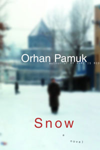

Saat saya selesai membaca novel ini saya pikir sebagian isu yang diangkat dalam buku ini hanyalah fiksi: sejumlah wanita muda dari keluarga muslim bunuh diri dengan alasan yang tidak jelas. Beberapa mengatakan, seperti yang diceritakan di dalam buku, karena mereka dilarang menggunakan jilbab oleh sekolah mereka, karena pernikahan yang dipaksakan, atau karena permasalahan hubungan percintaan.
Ka, seorang penyair dan sebagai tokoh utama dalam cerita, mengunjungi kota Kars selain untuk mengetahui alasan di balik kejadian tersebut dan untuk meliput pemilihan gubernur yang akan berlangsung, juga untuk bertemu dengan teman wanitanya.
Walaupun realitas yang terjadi mungkin sama [1] dan berbeda [2], Orhan Pamuk bisa menggabungkan keduanya menjadi sebuah kontroversi. Dalam buku tersebut, pertama, anda akan dibuat penasaran dengan "kenapa mereka bunuh diri?", kemudian tanpa disadari anda telah terjebak dalam setiap plot-plot pembunuhan dari kelompok radikal terhadap pendukung sekularisme -- dan sebaliknya, karakter kota dan orang-orang Kars, dan percintaannya dengan Ipek, teman lamanya yang tinggal di kota tersebut.
Novel ini menggambarkan persaingan antara sekularis dengan agamis Islam di dalam sebuah kota yang tertutup oleh salju, dengan Ka yang secara tidak sengaja terpaksa berada di tengah-tengah mereka saat terjadi konflik. Di satu sisi, agamis menginginkan kebebasan dengan menggunakan isu pelarangan jilbab untuk menentang pemerintah. Di sisi lain, nasionalis sekularis mempertahankan pelarangan tersebut dengan tujuan untuk membebaskan masyarakat dan menjaga visi negara. Keduanya melakukan segala hal, termasuk pembunuhan, untuk mencapai apa yang disebut dengan ideologi dan visi mereka.
Jika anda lahir dan tumbuh di kota dengan mayoritas muslim, yang biasa melihat wanita menggunakan jilbab dan melakukan aktivitasnya di masyarakat seperti wanita dan pria lainnya, anda akan merasakan roh dalam novel ini.
PS: Terima kasih buat Keke yang telah "meminjamkan" novel ini kepada saya.
--
[1] http://en.wikipedia.org/wiki/Headscarf_controversy_in_Turkey
[2] http://www.nytimes.com/2006/07/12/world/europe/12iht-virgins.2184928.html?_r=1&pagewanted=all&